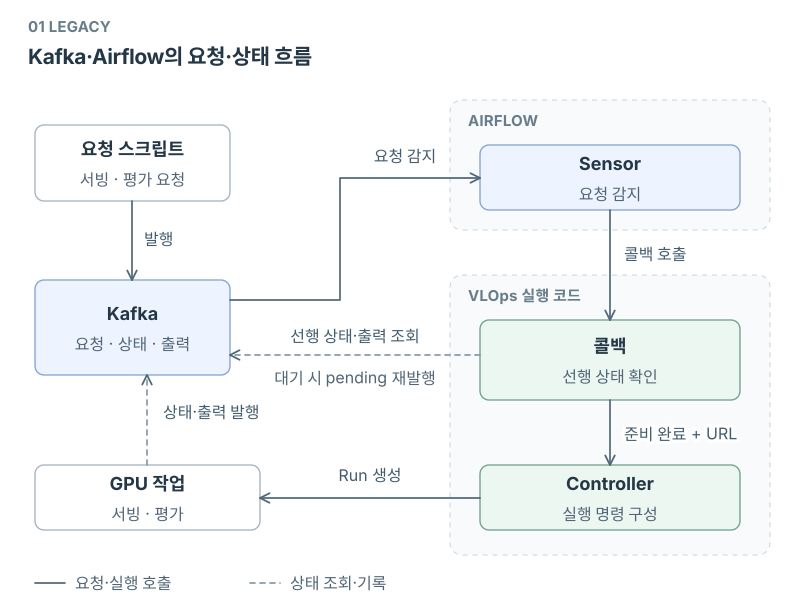
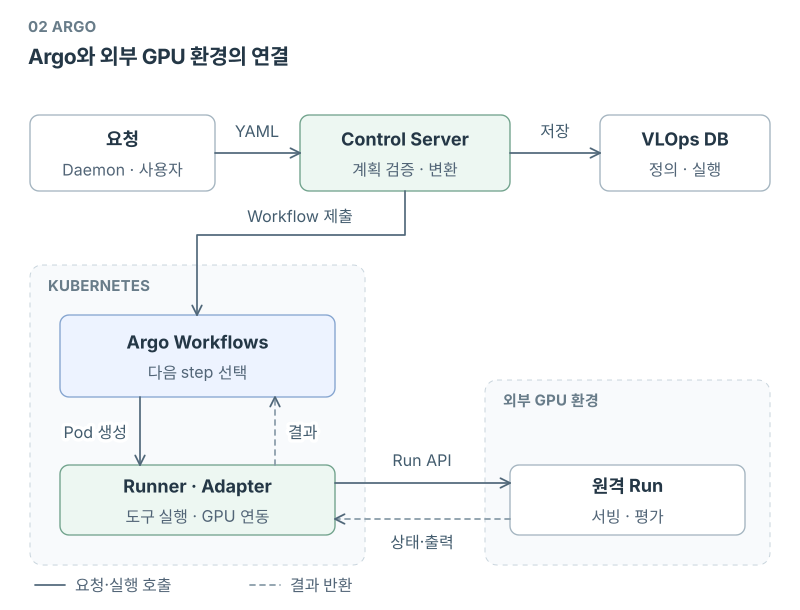
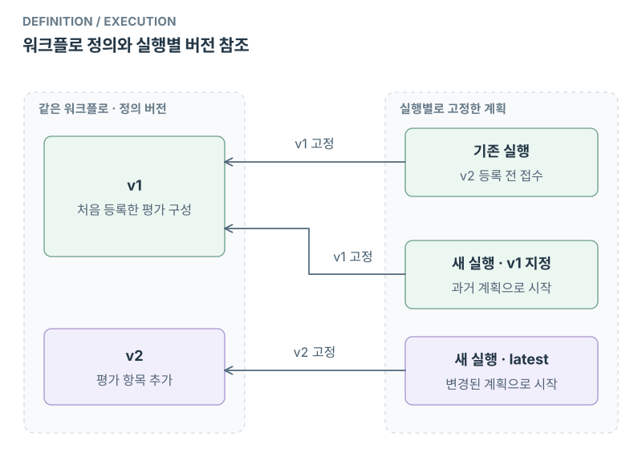
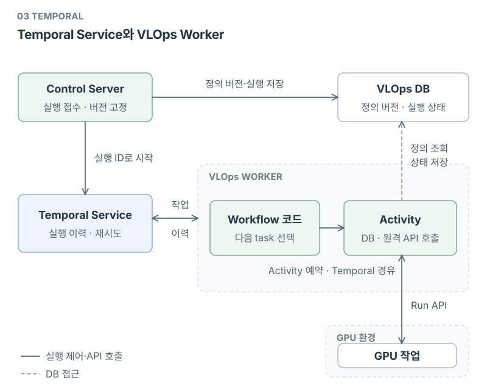
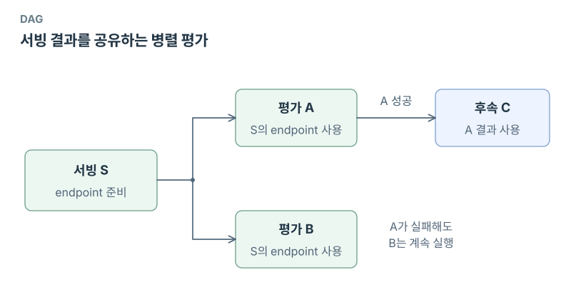

VLOPS · 모델 평가 워크플로 재설계
모델 평가 워크플로 재설계: Argo에서 Temporal로 전환한 이유
NAVER Cloud에서 MLOps 인턴으로 일하며 모델 서빙·평가 플랫폼인 VLOps를 개발했다. 기존에도 모델 서버가 준비되면 벤치마크를 실행하고 결과를 수집하는 과정은 자동화돼 있었다. 다만 평가가 어디서 대기하고 무엇 때문에 실패했는지 알아보려면 Kafka 메시지, Airflow 콜백, 원격 GPU 작업을 함께 확인해야 했다.
재설계 중에는 실행 도중에도 평가 항목과 순서를 바꾸고 싶다는 요구가 나왔다. 두 벤치마크를 실행하는 중에 세 번째를 추가한다면, 이미 시작한 평가도 세 개를 모두 실행해야 할까? 최종 구현에서는 계획을 수정할 때 새 버전을 등록하고, 이미 접수한 평가는 요청 당시의 계획대로 실행하도록 했다.
기존 Kafka·Airflow 구조와 상태 추적의 한계
기존에는 VLOps 콜백이 Kafka에서 선행 작업의 상태를 조회한 뒤 다음 작업을 실행했다. 모델 평가라면 서빙 작업이 먼저 모델을 로딩하고 서버를 준비해야 했고, 평가 작업은 준비된 서버의 URL로 벤치마크를 실행했다.
서빙 상태 조회와 평가 요청 재발행
요청 스크립트는 서빙과 평가를 각각 Kafka 메시지로 발행했다. 작업마다 ID를 부여하고 같은 평가에 속한 작업은 파이프라인 ID로 묶었으며, 평가 메시지에는 선행 서빙 작업의 ID와 출력 참조를 넣었다. 서버 URL을 아직 몰라도 서빙의 출력에서 가져오도록 지정해 평가 요청을 미리 제출할 수 있었다.
Airflow Sensor가 메시지를 감지하면 VLOps 콜백을 호출했다. 서빙 요청을 받은 콜백은 Controller를 통해 원격 GPU 작업을 생성했고, 이후 상태가 바뀔 때마다 같은 작업 ID로 새 메시지가 발행됐다. 실행 요청과 상태, 출력이 모두 같은 토픽에 쌓이는 구조였다.
평가 콜백은 이 토픽을 처음부터 읽으며 선행 서빙 작업의 상태와 출력을 찾았다. 서빙이 ready 또는 completed라면 Controller가 출력의 host·port로 평가 URL을 채운 뒤 GPU 환경에 평가 작업을 생성했다.
서빙이 아직 준비되지 않았다면 평가 요청을 pending으로 다시 발행했다. Sensor가 이를 감지하면 콜백이 서빙 상태를 다시 확인했다. 반면 선행 작업을 찾지 못했거나 이미 실패·취소됐다면 평가도 실패로 기록했다. 실패한 작업의 재시도 횟수를 확인해 다시 실행하고, 파이프라인 종료 시 원격 세션을 정리하는 로직도 콜백에 있었다.

Airflow DAG 밖의 작업 의존성
Airflow DAG에는 토픽 준비와 Sensor만 등록돼 있었다. 실제 서빙과 평가의 의존 관계는 Kafka 메시지에, 실행 조건과 재시도는 콜백에 들어 있었다. 평가 조합마다 Airflow DAG를 만들 필요는 없었지만, Airflow 화면의 task 상태만으로는 실제 평가가 어디까지 진행됐는지 알기 어려웠다.
평가가 계속 대기한다면 서빙이 아직 준비되지 않았는지, 준비됐지만 Kafka에 기록되지 않았는지, 콜백이 기록을 처리하지 못했는지부터 구분해야 했다. 파이프라인 ID로 메시지를 모아도 원격 Run의 상태와 콜백 처리 결과까지 대조해야 원인을 찾을 수 있었다.
첫 재설계에서는 작업 목록과 의존 관계를 하나의 계획으로 제출받기로 했다. 메시지와 콜백에 나뉘어 있던 실행 순서를 DAG로 표현하고, 실행 엔진이 각 작업의 완료와 실패를 관리하도록 바꾸려 했다.
첫 재설계: YAML 기반 평가 정의와 Argo 도입
첫 재설계에서는 DAG 실행을 Argo Workflows에 맡겼다. 의존성에 따른 실행 순서와 재시도·타임아웃은 Argo를 활용하고, VLOps에서는 기존 평가 도구와 GPU 환경을 연결하는 데 집중하기로 했다.
팀마다 이미 사용하는 평가 도구와 GPU 환경이 있었지만, 평가를 시작하거나 상태와 결과를 확인하는 방법은 달랐다. 도구까지 모두 교체할 필요는 없었다. 기존 환경을 유지하면서 제출과 실행 관리 방식을 맞추되, 우선 미세조정 모델의 평가 흐름부터 적용하기로 했다.
사용자는 서빙과 평가를 따로 요청하는 대신, 작업 목록과 의존 관계를 하나의 YAML로 제출하도록 했다. Control Server는 ‘서빙이 준비되면 해당 endpoint로 평가를 실행한다’는 계획을 검증하고 실행 기록을 생성했다.
YAML을 Argo Workflow로 변환하는 코드는 Control Server에 두었다. 사용자가 Argo 템플릿이나 Kubernetes 설정까지 작성할 필요 없이 평가를 정의할 수 있도록 한 것이다. 평가 도구별 입력 검증과 실행 명령 구성, 선행 작업의 출력 전달도 VLOps에서 처리했다.

서빙 step의 Runner는 Adapter를 통해 외부 GPU 환경에 모델 서버를 띄웠다. 준비 상태와 endpoint를 확인해 step을 완료하면 Argo가 평가 step을 시작했고, 평가 Runner는 전달받은 endpoint로 평가 도구를 실행했다.
Argo가 실행하는 Runner Pod와 모델이 올라가는 GPU Run은 별개였다. Argo는 Pod와 step의 상태를 관리하고, 외부 GPU Run의 생성·조회·종료는 환경별 Adapter가 담당했다.
체크포인트 감지는 실행 엔진과 분리했다. Git push만으로는 모델 파일이 모두 준비됐는지 알 수 없어, 파일이 생성되는 환경에 Local Daemon을 두고 준비 여부를 확인한 뒤 Control Server에 요청하도록 설계했다. 제출된 요청의 실행 순서는 Argo가 관리했다.
계획 변경 요구와 Temporal 전환 검토
처음 Argo를 도입할 때는 제출 시점의 DAG를 의존 관계에 따라 실행하면 됐다. 이후 실행 도중에도 새 산출물이나 사용자 입력에 따라 후속 작업을 추가·제거하고 의존 관계를 바꾸고 싶다는 요구가 나왔다. DAG를 다시 제출하는 것만으로 충분한지, 진행 중인 실행이 변경 요청을 받아야 하는지부터 검토했다.
예를 들어 평가와 결과 정리 사이에 다른 평가를 추가하려면, 이미 끝난 평가의 결과는 재사용할지, 결과 정리가 시작됐다면 중단할지 정해야 했다. 변경 전후의 계획과 결과를 어떤 실행 이력으로 남길지도 문제였다.
Argo를 유지하면서 수정된 DAG를 새 revision으로 제출하는 방안도 검토했다. 필요하면 기존 실행을 중단하고 완료된 결과를 재사용할 수 있었지만, 어떤 결과를 가져올지, 아직 실행 중인 작업은 어떻게 처리할지, 두 실행의 관계를 어떻게 남길지는 VLOps에서 구현해야 했다.
Temporal에서는 실행 중인 Workflow가 Signal이나 Update로 변경 요청을 받은 뒤, 완료된 작업과 진행 중인 작업을 보고 후속 작업을 결정하는 방안을 검토했다. 현재 실행의 상태를 가지고 변경 요청을 처리할 수 있다는 점이 당시 요구에 맞았다. 장시간 평가 중 워커가 재시작해도 실행 이력을 바탕으로 재개할 수 있다는 점을 함께 고려해 Temporal을 선택했다.
다만 최종적으로 제공한 업데이트 방식은 같은 워크플로 ID에 새 정의 버전을 등록하는 것이었다. 진행 중인 그래프를 수정하지 않고, 이미 접수한 평가는 원래 정의를 끝까지 따르도록 했다. 결과가 나온 뒤에도 어떤 계획으로 평가했는지 확인할 수 있어야 했기 때문이다. 이 버전 정책 자체는 Argo에서도 구현할 수 있었다.
정의 버전 관리와 실행별 버전 고정
작업 목록과 의존 관계를 담은 정의는 워크플로 ID와 버전으로 저장했다. 평가를 요청할 때는 별도의 실행 ID를 발급하고, 그 실행이 사용할 정의 버전을 기록했다.
실행 접수 시점의 버전 확정
예를 들어 v1이 최신일 때 요청을 접수했는데, 워커가 시작하기 전에 v2가 등록될 수 있었다. 실행 기록에 latest만 저장하면 워커는 v2를 읽게 된다. 같은 시점에 접수한 평가라도 워커가 언제 시작됐는지에 따라 실행할 작업이 달라지는 문제가 있었다.
그래서 요청을 접수할 때 latest를 버전 번호로 확정했다. 위 경우라면 v1을 조회한 뒤, 실행 레코드에 v1을 저장하고 해당 정의의 작업 레코드도 같은 트랜잭션에서 생성했다. DB 저장이 끝난 뒤 이 실행 ID로 Temporal Workflow를 시작했다.
# 실행 접수 순서를 일반화한 의사코드
plan = load_definition(workflow_id, requested_version_or_latest)
with transaction:
run = save_execution(workflow_id, plan.version)
save_task_executions(run.id, plan.tasks)
start_temporal_workflow(run.id)
정의를 업데이트할 때 버전 번호는 서버에서 부여했다. 제출한 내용이 최신 정의와 같으면 기존 버전을 반환하고, 동시 요청이 같은 버전 번호를 사용하면 DB 유일성 제약으로 중복 저장을 막았다. 충돌한 요청은 최신 정의를 다시 조회해 제한된 횟수 안에서 재시도했다.
새 버전의 작업 이름이 같더라도 입력이나 설정은 달라질 수 있었다. 따라서 새 실행에 이전 작업의 결과를 자동으로 넘기지는 않았다. 결과 재사용은 평가 resume과 기존 추론 결과를 채점하는 scoring에서 별도로 지원했다.
Temporal Workflow의 DAG 스케줄러
Temporal로 전환하면서 Argo에 맡겼던 DAG 실행은 직접 구현해야 했다. 사용자는 계속 YAML로 평가를 정의했으므로, YAML의 의존 관계를 해석하고 다음 작업을 선택하는 스케줄러를 VLOps의 Workflow 코드에 작성했다.

작업 시작, 상태 조회, 결과 저장처럼 DB나 GPU API를 호출하는 부분은 Activity로 분리했다. 다음 조회까지 기다리는 시간은 Workflow 타이머로 처리했다.
입력 참조와 선행 작업 검증
출력 참조와 의존성 선언이 일치하는지도 검사했다. 평가 입력에서 서빙 endpoint를 참조하면서 서빙을 선행 작업으로 지정하지 않으면, 서버가 준비되기 전에 평가가 시작될 수 있기 때문이다. 이런 요청은 거절했고, 순환 의존성과 존재하지 않는 작업을 참조하는 경우도 YAML 접수 시 검증했다.
독립 분기의 병렬 실행과 실패 처리
초기 Temporal 구현은 위상 정렬한 순서대로 작업을 하나씩 실행했다. 이후에는 선행 작업이 모두 성공한 작업들을 함께 시작하도록 바꿨다. 한 작업이 끝날 때마다 실행 가능한 작업을 다시 찾고, 실패한 작업에 의존하지 않는 분기는 계속 실행했다.
아래 예시에서는 서빙 S의 endpoint를 평가 A와 B가 함께 사용하고, 후속 작업 C는 A의 결과만 기다리도록 구성했다.

서빙 S는 endpoint가 준비되면 성공으로 처리해야 A와 B를 시작할 수 있었다. 그렇다고 이때 GPU 서버까지 종료하면 평가는 진행할 수 없었다. 그래서 서빙 작업의 완료와 GPU 자원의 회수를 분리했다. 워크플로 종료 시 회수하도록 설정한 서버는 서빙 단계가 끝나도 유지하고, 평가와 후속 작업을 모두 처리한 뒤 회수했다.
A가 먼저 성공하면 B가 끝나기 전에도 C를 시작했다. A가 실패하면 C는 건너뛰되 B는 계속 실행했고, 선행 서빙 S가 실패했다면 A와 B뿐 아니라 C도 실행하지 않았다.
일부 분기가 성공해도 실패한 작업이 하나라도 있으면 전체 워크플로는 실패로 기록했다. 다만 A가 실패하고 B가 성공한 경우에도 B의 결과는 남겼고, C에는 선행 작업 실패로 실행하지 못했다는 이유를 기록했다.
어느 작업을 시작할지, 실패를 어디까지 전파할지, 자원을 언제 회수할지는 이처럼 VLOps 코드에서 결정했다. Temporal은 Activity 결과와 타이머를 실행 이력에 남겼다. 워커가 재시작하면 이 이력을 재생해 Workflow의 상태를 복원하고, 아직 남은 작업을 같은 규칙으로 처리했다.
평가 결과와 Temporal의 종료 상태도 구분했다. Workflow 코드가 평가 실패를 DB에 기록한 뒤 정상 종료하면 Temporal에는 COMPLETED로 표시될 수 있었기 때문이다. 평가의 성공 여부는 VLOps의 실행·작업 상태로 확인했다. 복구할 수 없는 Activity 오류나 사용자 취소는 일반 작업 실패와 달리 DAG 실행을 중단하도록 처리했다.
버전 고정과 병렬 실행 테스트
버전 고정 테스트에서는 v1으로 실행과 작업 레코드를 만든 뒤 v2를 등록했다. 이후에도 기존 실행이 v1과 원래 작업 구성을 유지하는지 확인하고, 새 실행은 최신 버전을 선택하면 v2를, v1을 지정하면 이전 구성을 사용하는지 검사했다.
동시 업데이트는 여러 스레드를 barrier에서 대기시킨 뒤 요청을 한꺼번에 보내 검증했다. 같은 내용과 서로 다른 내용의 요청이 겹쳐도 버전 번호가 중복 저장되지 않고 기존 정의가 유지돼야 했다. API·CLI에서 정의를 생성하고 업데이트한 뒤 과거 버전을 지정해 실행하는 경우도 테스트했다.
병렬 실행 테스트에서는 의존 관계가 없는 A와 B를 두고, 두 작업이 모두 시작돼야 어느 쪽이든 완료 응답을 반환하는 가짜 실행 환경을 사용했다. 순차 실행이라면 A의 완료를 기다리느라 B를 시작할 수 없으므로 통과하지 못하는 테스트였다. 실제 기록에서도 두 작업의 시작이 첫 완료보다 앞서는지 확인했다.
| 검증 대상 | 확인한 동작 |
|---|---|
| 독립 task의 병렬 실행 | A 또는 B가 완료되기 전에 두 작업이 모두 시작됐다. |
| 여러 선행 task를 기다리는 작업 | 모든 선행 task가 성공한 뒤에 시작했다. |
| 한 분기의 실패 | 실패한 task의 후속 작업은 시작하지 않았고, 독립 분기는 계속 실행했다. |
| 선행 출력 전달 | 서빙 준비 후 반환한 endpoint가 평가 입력에 전달됐다. |
서빙과 평가를 연결한 테스트에서는 준비된 endpoint가 평가 명령에 들어가는지 확인했다. 워크플로 종료 시 회수하도록 설정한 서빙 자원이 평가 작업의 자원보다 나중에 해제되는지도 검사했다.
DAG의 실행 가능 작업과 실패 전파 범위를 계산하는 코드는 Temporal 실행과 로컬 직접 실행에서 함께 사용했다. 두 방식에 같은 테스트를 적용해 작업의 실행·건너뛰기 결과가 일치하는지 확인했다.